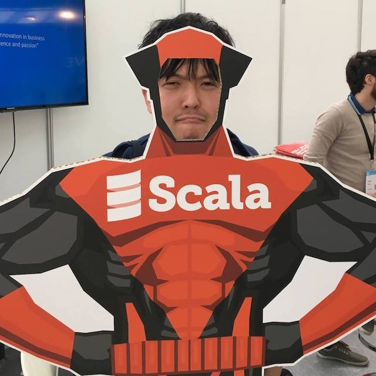

Scalaの次世代コンパイラ
DottyでWEBフレームワークを作ってみた
2017/08/01
iwamatsu0430
誰

Dottyって知ってます？？
これです、これ
何が変わるんですか？
Union Type
traitパラメータ
Enum構文
他にも色々…
使ってみたい…！
WEBアプリを作りたい(ギョームに還元したい)
👇
Playframework等が対応していない
👇
WEBフレームワークがない😇
じゃあ作ってみましょう💪
環境構築※
コンパイラのインストール
$ brew install lampepfl/brew/dotty
sbt 0.13.15~にて
$ sbt new lampepfl/dotty.g8
環境構築
簡単に作れました

実行
$ sbt run
どんな感じで使える
フレームワークにするか…🤔
とりあえずこんなController
package controllers
import scala.concurrent.Future
import jp.iwmat.sfw.mvc._
class UserController extends Controller {
@GET("/users")
def list() = action {
OK
}
@GET("/users/:id")
def detail(id: Long) = async {
Future.successful(OK)
}
@POST("/users")
def add() = action[JSON] {
OK("hogehoge")
}
}お手軽な感じにしてみたい
@GET("/users")
def list() = action {
OK
}POSTメソッドかつJSON型リクエスト
@POST("/users")
def add() = action[JSON] {
OK("hogehoge")
}まずコンパイルが
通るようにしてみる
とりあえずこんな感じ
trait Controller {
def action[A](f: implicit Request => Response): Action = ???
def async[A](f: implicit Request => Future[Response]): Action = ???
}f: implicit A => B ❗
新機能使っちゃいました
REPLで確認してみましょう
$ dotr
implicit function
関数の引数を暗黙的にできます
implicit function
scala 2.11.xで近い事をしようとしても…
def foo(f: String => String): String = f("a")
def foo(s: String): String = s
foo { implicit s =>
s + "b"
}
foo {
"b" // スコープに引数はいない
}